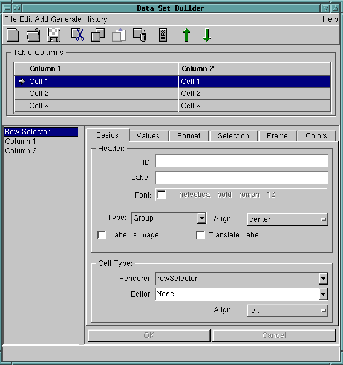

The Data Set Builder generates a resource method of the table specification in the category tableColumns specs of the class protocol, which returns a symbolic representation (literal array) of the table components and their behavior. The table methods are invoked by the UIBuilder when the application's window is created for those widgets which define a table aspect.

| Menu | Button | Description |
| File/Load | Discard all changes and continue with a new
empty table description. |
|
| File/Load | Opens a dialog to load a table spec from a class. | |
| File/Save | Saves the current table spec. | |
| Edit/Cut | Cuts the selected column(s) and places it to the clipboard. | |
| Edit/Copy | Copies the selected column(s) to the clipboard. | |
| Edit/Paste | Pastes the contents of the clipboard. | |
| Edit/Delete | Deletes the selected column(s) without placing
it into the clipboard. |
|
| Edit/Move Up | Moves the selected column one step up. | |
| Edit/Move Down | Moves the selected column one step down. | |
| Add/New Column | Adds a new column after the current selected column. | |
| File Menu | Description |
| Save As | Opens a dialog to select a class and selector in order to save
the current table spec. |
| Pick Columns... | Changes the cursor to cross hair for moving it over another table view to
load its table spec. |
| Exit | Exits the Data Set Builder. |
| Generate Menu | Description |
| Define Row Class... | Opens a dialog to define the Row class which will implement
all methods derived from the table spec. |
| Browse Row Class | Opens a System Browser on the Row class. |
| Browse Class | Opens a System Browser on the application class. |
| Generate Code | Generates and installs code in the Row class. |
| History Menu | Description |
| ... | Switch to a table spec derived from the history of previous loaded specs. |
After creating or loading a table specification the columns are displayed
on the left and top side of the Data Set Builder. To see or modify the specification
of a specific column, click on that column.
There are 6 categories for which you can change the behavior of a column.
| ID | Unique identifier of the column (optional). |
| Label | The label of the headline. |
| Font | Set the font of the headline (optional).
On default the font derives from the table view. |
| Type | Define the visual renderer of the headline. |
| Align | Adjust the label left, right or center. |
| Label Is Image | Turns on/off label access (optional).
If on, the label is actually a selector which is performed on the application to access the drawable label. |
| Translate Label | Turns on/off label translation behavior (optional).
Translate the label via the application classes resource file (i.e. national strings). |
| Visual renderer | Visual renderer used in none editing mode. |
| Editor | Define the editor of the cell
Editor opened on the cell. If None is selected, the cell is readonly. |
| Align | Adjust the label left, right or center. |
| Read | Method invoked to get the value.
The value returned is set to the editing model and in case that the Print selector is unspecified used for drawing. |
| Write | Method invoked to write back the value from the editing model.
required if an editor is defined (see Editor). |
| Converter | Method invoked to get a type converter on the editing model (optional). |
| Method invoked to get the drawable value. (optional)
Returns the label to be displayed, a string, a collection of strings or a bitmap. If the selector is unspecified, the value of the invoked Read selector is displayed. |
| Selector | Method invoked to get the menu for the clicked cell (optional).
If the method is unspecified or returns nil, the application will be asked for the menu. |
| Choices | Method invoked to retrieve the list of choices (optional).
Returns the list used by the ComboList or ComboBox (see Editor-Type). |
| Editable | Method invoked for ComboBoxes only (optional).
Turn on/off that the input field of the ComboBox is editable. |
| Input Type | Specified type converter used by the input field (optional). |
| Max Size | Maximum size of the string which can be typed into the editor field (optional). |
| Text Format | Format string specifying the output format of the cell text (optional). |
| Class | Format | Comment | More Info |
| Numbers | %<n>d | C-Printf style decimal format | see C-language printf or CharacterArray printf_printArgFrom:to:withData: |
| %<n>x | C-Printf style hex format | ||
| %<n>.<m>f | C-Printf style float format | ||
| %<n>.<m>f | C-Printf style float format | ||
| Time | %h:%m:%s | Hour, minute, seconds | AbstractTime printFormatDocumentation |
| Date | %day:%month:%year | Day, Month, Year | AbstractTime printFormatDocumentation |
| Selector | Message invoked if the headline was clicked (optional). |
| Argument | optional argument to the click on headline method (optional). |
| Is Selectable | Turns on/off that all cells in a column are selectable. |
| Selector | Message invoked during selecting a cell (optional).
Turns on/off the selectability for a specific cell. |
| Show Selection HighLightened | Message invoked during drawing a selected cell (optional).
Turns on/off the highligthing for a specific selected cell. |
| Selector | Message invoked on double click (optional).
name of the message which will be invoked whenever the user double clicks on the cell. If no method is specified, the application might be informed through to the double click action of the table widget. |
| Show Row Separator | Turns on/off the visibility of the horizontal cell separator. |
| Selector | Message invoked during drawing a cell (optional).
Turns on/off the visibility of the horizontal cell separator for the specific cell. |
| Show Column Separator | Turns on/off the visibility of the vertical cell separator. |
| Column Width | Set an absolute or relative width (optional).
On default the width of the cells is computed by their drawable values. |
| Minimum Width | Minimum required width measured in pixels (optional).
Only visible if the Column Width is unspecified. |
| Row Height | Set the absolute height of the cell (optional).
On default the height of the cells is computed by their drawable values. |
| Compute Width From Items | Turn on/off the automatic width computing.
If on, the required Column Width will be ignorred. |
| Is Resizeable | Turn on/off the resizeability of a column.
If on, the user can resize the column by moving he mouse on the separator at the headline. |
| Foreground | Define the foreground color of the headline
If no color is specified, the used foreground color derives from the style sheet. |
| Background | Define the background color of the headline
If no color is specified, the used background color derives from the style sheet. |
| Foreground | Define the foreground color for all cells in the column
If no color is specified, the used foreground color derives from the style sheet. |
| Background | Define the background color for all cells in the column
If no color is specified, the used background color derives from the style sheet. |
| FG-Selector | Message invoked during drawing a cell (optional).
Returns the foreground color for a specific cell. If the method is unspecified or returns nil, the default foreground color is used. |
| BG-Selector | Message invoked during drawing a cell (optional).
Returns the background color for a specific cell. If the method is unspecified or returns nil, the default background color is used. |

Copyright © 1998 eXept Software AG, all rights reserved